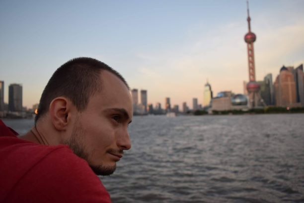

SERGIU DOBOZI CURRICULUM VITAE

Date de contact
E-mail: simplero@yahoo.ro
Telefon: +40766368098
Adresa: Strada Alverna nr. 70, ap. 12, Cluj-Napoca
Obiectiv profesional
Doresc să învăț lucruri noi în permanență și să obțin o înțelegere solidă în orice proiect mă implic.
Mă interesează în prezent joburi din următoarele domenii: testing, IT, chimie
Sunt deschis în același timp și la alte oportunități.
Experiență profesională
| Departament |
MICC (Management Information and Customer Care)/Traveler Information Reporting |
| Iunie 2013 – Aprilie 2018 |
Analist de date – EXL Service |
| Responsabilități principale |
Gestionare de rapoarte și consultanță în domeniul călătoriilor de afaceri
Automatizarea rapoartelor utilizând VBA (Visual Basic pentru Excel) |
| Departament |
Tech Support/Customer Care |
| Mai 2018 – Iunie 2018 |
Reprezentant Serviciu Clienți – Arvato |
| Responsabilități principale |
Suport tehnic și consultanță clienți din Suedia în legătură cu produse Microsoft |
Educație
| 2008 – 2013 |
Universitatea Babeș Bolyai, Facultatea de Inginerie Chimică
Specializarea Ingineria Substanțelor Anorganice și Protecția Mediului |
| 2004 – 2008 |
Liceul Teoretic Onisifor Ghibu
Specializarea Mate-Info, Engleză Intensiv. Limbajul de programare predat: C++ |
Abilități
Gândire analitică – obținută în urma experienței de lucru cu rapoarte statistice.
Capacitate de învățare rapidă – cunoștințele de VBA le-am obținut după doar două săptămâni de training.
Aptitudini și competențe sociale – dobândite într-o echipă variată de 20 de oameni în 5 ani de zile.
Aptitudini și competențe informatice: Wordpress – nivel mediu, Microsoft Office – nivel mediu, Java Core –
nivel începător
Limbi străine
Limba română – nativ
Limba engleză – avansat
Limba suedeză – avansat
Limba maghiară - începător
Proiecte
Simple Romanian
Am creat în Wordpress un website numit "Simple Romanian" dedicat studenților de limba română din întreaga
lume.
Acest proiect a fost prezentat într-un reportaj pe Antena 1 în 2018.
Pornit în Aug 2015.
JJ Comedy
JJ Comedy este un proiect hobby care îmi permite să mă exprim în mod creativ prin comedie cu ajutorul altor
persoane pasionate și deschise.
Pornit în Jan 2017.
Hobby-uri
Călătoriile, învățatul limbilor străine, actoria, filmatul, socializarea și activitățile în
aer
liber